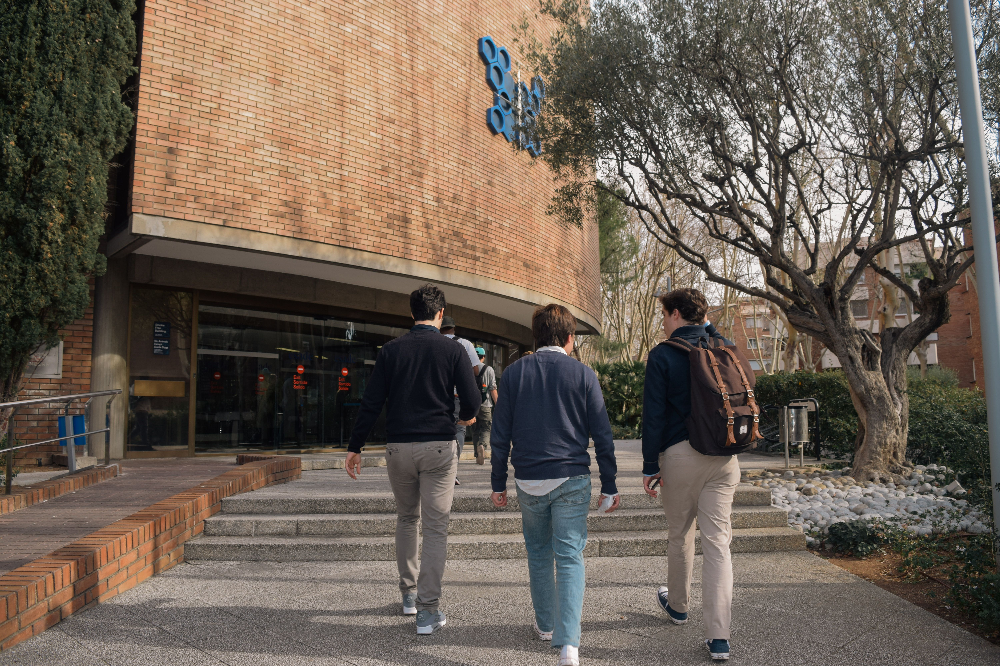

Mentorías y convivencia
Equipos de orientación acompañan procesos emocionales, sociales y vocacionales.


Vida La Hoja
Aprender también sucede en los pasillos, la biblioteca, los viajes, las actividades y los proyectos compartidos.
Equipos de orientación acompañan procesos emocionales, sociales y vocacionales.
Programas extracurriculares amplían la mirada y fortalecen la autonomía.